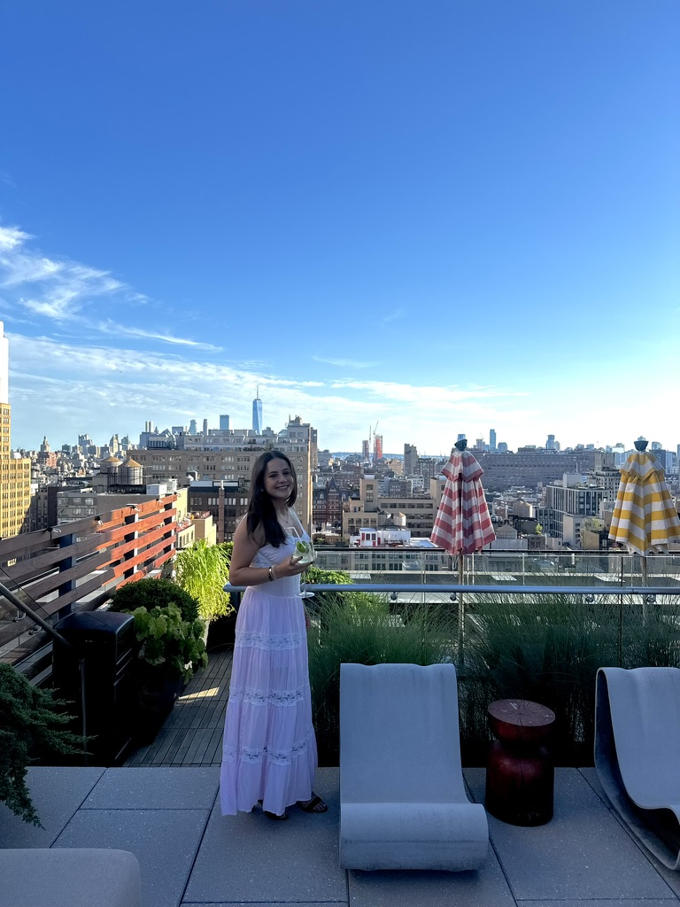

A short story about a man whose life revolves around death until love unsettles everything he thought he understood.
Sydney Holzman
Writing that lives in the details most people walk past.
A clean editorial home for short stories, poems, food writing, lifestyle pieces, and essays that linger a little longer.

Sydney writes across forms, from personal essays and speeches to journalism, letters, and literary work, always returning to the same instinct: to pay close attention and give language to what lingers.
Archive
Writing organized by form, mood, and where it first found a home.
Featured Essay
The Shoes We Outgrow
On moving on and moving forward, and the strange ache of realizing that growth rarely asks for permission before it changes you.
Read the essayShort Stories
Fiction that leans into atmosphere, memory, and obsession.
Poems
Small, concentrated pieces still gathering their final shape.
This section will hold shorter work, fragments, lines, and pieces built more on image and rhythm.
Food Pieces
Reported, funny, and culture-forward work written for Spoon.
Tulane men keep proving romance is temporary, but a bad restaurant choice is forever.
Lifestyle
Writing for Hopelessly Yellow and other places where voice matters.
Lifestyle essays, commentary, and pieces rooted in campus, culture, and the small rituals that make a life.
About
A writer with an instinct to notice what stays behind.
Sydney is a writer whose work lives in the details most people walk past. A senior at Tulane University and contributor to Spoon University and Hopelessly Yellow, she writes across forms: personal essays, speeches, journalism, letters, but the thread that runs through all of it is the same: an instinct to pay attention and give language to what lingers.
She collects the moments other people forget and turns them into something worth holding onto.
Whether she is writing for a crowd of thousands or an audience of one, her voice is warm, specific, and unmistakably hers.
“She collects the moments other people forget and turns them into something worth holding onto.”
Submit
Send a prompt, a question, or something that deserves a closer look.
If you have a subject Sydney should write toward, a memory worth revisiting, or a piece you want to share, send it here.
sydwin753@gmail.com